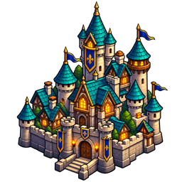

Règles et fonctionnement
Capitale royale et reconquête
La capitale utilise un trésor, des exploitations et des convois pour soutenir son armée.
Comprendre ce que cela implique
La reconquête consomme des ressources réelles : le réseau économique et les convois ont donc un rôle stratégique, au-delà du décor. Capturer une exploitation peut interrompre sa liaison à la capitale.
Le document décrit aussi une phase de campagne liée aux Greniers du roi. Sa présence dans les modules historiques ne signifie pas que tous les scénarios ou toutes les nouvelles parties déclenchent cette phase. Les anciennes sauvegardes sans cette configuration gardent leur état.

Détails de référence
Texte de référence mis en forme et conservé dans l’historique de cet article. Les paragraphes datés peuvent décrire une évolution ou une étape antérieure.
La campagne chaos initialise la capitale au démarrage d’une nouvelle partie. Les règles sont dans app/js/core/capital-ai-service.js, sans DOM. L’état de décision est sauvegardé dans WorldState.flags.capitalAi ; les héros, garnisons, équipements et convois utilisent les entités persistantes du moteur.
Garnison fixe : une cavalerie lourde et deux infanteries lourdes, toutes adjudant, soit 18 soldats par unité et 54 soldats au total.
Aldren : guerrier niveau 15, grade Seigneur, huit équipements royaux. La composition retenue pour « une unité de chaque » est une cavalerie lourde et une infanterie lourde. La progression et les promotions utilisent les règles existantes : capacité de six unités, autorité maximale 19, coût total 17 pour deux unités lieutenant de 24 soldats chacune. L’armée personnelle compte donc 48 soldats. Le niveau ne multiplie pas directement l’effectif d’une unité.
Quatre exploitations dédiées (or, fer, bois, pierre), chacune accompagnée d’un village. Elles sont placées autour de la capitale réellement choisie, dans la zone autorisée, en GPS comme en simulation.
Le placement automatique privilégie une capitale centrale. Le rayon économique correspond à 50 % du rayon équivalent de la surface utile, plafonné à 600 m en GPS. La simulation applique la même proportion en unités de carte. Tous les lieux permanents, capitale comprise, respectent un écart entre centres égal au moins à la somme des rayons d’interaction plus un mètre (une unité en simulation). Le réseau est validé en groupe avant déplacement ; un terrain trop étroit provoque un refus sans réduire l’écart minimal.
Les convois payés et escortés collectent le stock de production et le déposent physiquement à la capitale. Leur capacité et leurs déplacements suivent le service de commerce existant. Capturer une exploitation suspend sa liaison ; les convois détruits peuvent être remplacés si le trésor le permet.
Après les missions royales, à la fin des Greniers du roi, la capitale et son réseau passent au Chaos. La reconquête démarre automatiquement, sans dialogue avec le maréchal devenu hostile. Ce point sépare la phase de missions royales de la phase stratégique finale.
Toutes les 30 secondes de jeu, l’IA alterne défense et recrutement, sans rattrapage massif au rechargement. Elle paie les travaux avec du bois, de la pierre et du fer réellement présents dans le trésor ; chaque lieu reçoit au plus trois ouvrages (+2 défense chacun). Les recrutements paient le héros et les soldats selon les coûts du catalogue.
Quatre GA militaires actifs au maximum. Les classes alternent guerrier, éclaireur, mage ; leur niveau correspond à la moyenne arrondie des héros joueurs actifs. Les armées recherchent la cible la plus proche parmi les héros joueurs et leurs lieux capturables. Elles utilisent les déplacements, interceptions et batailles existants, puis déposent des unités dans les lieux conquis.
Reprendre la capitale après la bataille finale achève la campagne. Un combat gagné sur place sans prise de contrôle ne valide pas la victoire.
Les effectifs, coûts et rythmes constituent un premier équilibrage. Les anciens instantanés sans configuration capitalAi conservent leur état ; commencer une nouvelle partie pour obtenir tout le réseau.
Le placement ignore les positions candidates hors des limites de coordonnées acceptées par la zone, puis cherche dans une autre direction ou avec un rayon réduit. Cette correction évite un arrêt du démarrage en simulation sans modifier les ressources, les coûts ni les rythmes de l’IA. Les positions retenues restent validées par la zone et ses exclusions.
Le contrat de génération de carte reste validé dans le monde complet du serveur. Il est retiré de la vue partielle envoyée au joueur, qui ne contient pas les emplacements en attente, les lieux durables non découverts ni les éléments de quête inactifs. La capitale et son économie appartiennent au monde connu : elles apparaissent dès placement pour tous les joueurs. Les règles de détection des GA et de proximité pour interagir restent inchangées.
Vérification : node --test tests/capital-ai.test.js, puis npm test.